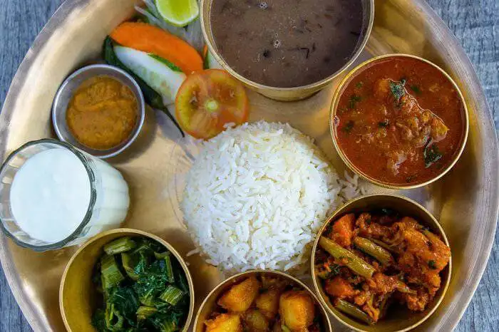
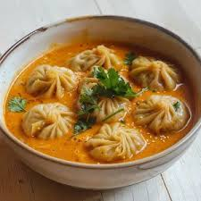
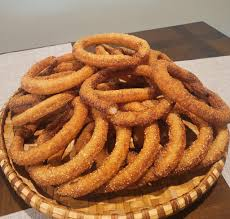
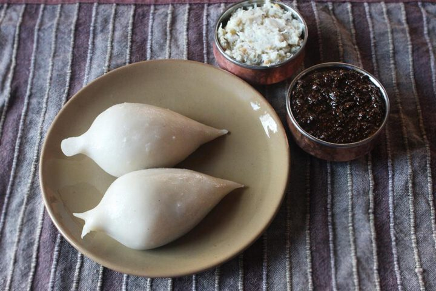

Dal Bhat is the staple food of Nepal consisting of rice and lentil soup, served with vegetables and pickles.

Momo is a popular Nepali dumpling filled with vegetables or meat and served with spicy chutney.

Sel Roti is a traditional homemade rice doughnut prepared especially during festivals like Tihar.

Yomari is a sweet steamed dumpling filled with molasses and sesame seeds, popular in Newar culture.